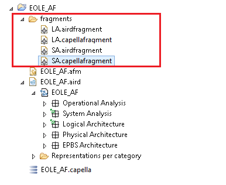
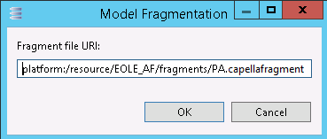
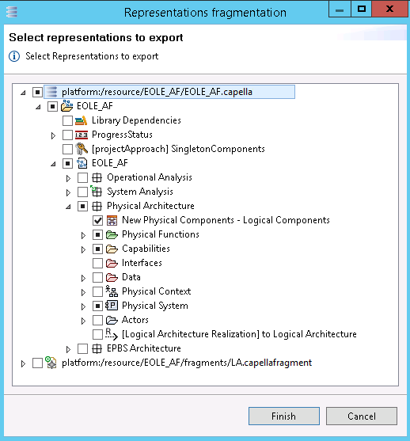
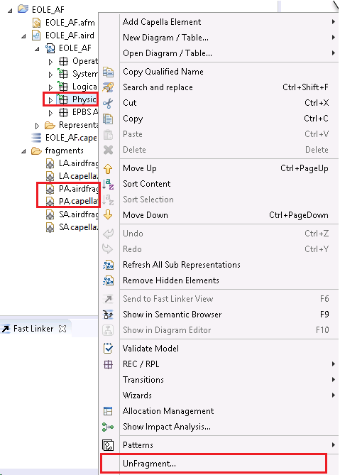

Fragment management
Models are stored in files and can be split into fragment files.
A fragmentation creates a new file, the fragmented model adds a reference to the new fragment.
As a consequence, the grain is file (a set of model elements).
Model Fragmentation
Overview
Capella provides a fragmentation facility to create containment fragments of a model.

| When working on a fragmented model, the user shall still always open the root aird file (*.aird), and not open directly one fragment. Capella is in charge to load and manage fragment dependencies: - .capellafragment: model fragments
- .airdfragment: diagram fragments
|
Fragments are parts of model stored in external files, stored inside “fragments” sub folder. The main model fragment is stored in a head file. It references fragments. A fragment can also be split in multiple sub-fragments.

Why splitting Models into Fragments?
A model may be split using functional concerns. In Capella, it is highly recommended to split the model by architecture. Architecture is a description of the underlying system under different points of view.
As a reminder, in Capella, there are 5 types of architecture (Operational Analysis, System, Logical, Physical, EPBS = Organizational). The recommended strategy is to create fragments for those elements.
A model may be split using organisational concerns. A user or group is responsible for a part of the model. Then a fragment is dedicated to the user or group. As a consequence the user or group can reserve checkout this part to make changes and check-in when the job is done.
NOTE: This strategy does not ensure the best collaboration between team members but it encourages formal exchanges.
NOTE: Tooling cannot support every situation; fragments are provided for technical reason (to limit file size and to avoid huge files) and to separate responsibilities into sub-model files.
The model can be split in fragments on most of the package types, on Classes, on Functions, etc.
Available Elements
The available elements are:
- Architectures,
- Packages like InterfacePkg, DataPkg…
- Functions, Classes, etc.
- Components and Actors
On other elements or if the Control… command is not supported on the selected element, the command is disabled.
The Fragmentation Command
Here, “Fragment…” is executed on the Physical Architecture.

The first step is to define the business model fragment, ‘.capellafragment’ file, (fragment that will contain the Physical Architecture).

The .airdfragment file (new fragment resource for diagram) is also asked to the user. Then the representation wizard is displayed if some diagrams are attached to related fragment. By default all attached diagrams are proposed to be included in new airdframent file. End User can selected the ones to exclude.

Creation of a Default Representation Fragmentation
The admin user, which is responsible for creating fragments, must create at least one representation for each business model fragment if he needs to propose a default “.airdfragment” in source control for each new user diagram creation.
Unfragmentation Command
| The end-user must not delete a fragment (aird or capellafragment) through right click delete action. |
To unfragment, please use contextual “unFragment…” command.

Running ‘Unfragment’ command (for instance System Analysis):
- Will check out required file to move data from the capellafragment to capella
- Will check out aird file to move representation data from the aird fragment to the main aird.
- Remove related fragments files: airdfragment and capellafragment.